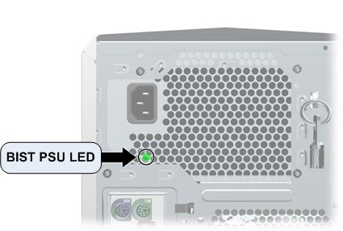

Operating Documentation
Direction 5181178-800, Rev# 16
BrightSpeed Select Service Methods Gen
Module Version 2.0, Version Date 8/28/09
Operating Documentation |
| Last Revised: | 17 June 2009 |
The follow information assists in confirming if the HP xw8600 Host PC is experiencing a hardware fault. Although the following is not a complete set of diagnostics, it should be sufficient in determining if the xw8600 is suffering from hardware issues at the prescribed Field Replaceable Unit (FRU) level.
Obtain complete diagnostic details for the HP xw8600 PC from Hewlett Packard’s support web site: http://welcome.hp.com/country/us/en/support.html
Search by PC model number and download the appropriate Technical Reference Guide.
| NOTE: | HP also supplies a software diagnostic CD-ROM (HP Insight Diagnostics) to use to confirm that the Host PC failed. Please note that these diagnostics only test the base hardware configuration (systemboard, memory, etc.) of the xw8600 PC. Add-in cards (Graphics, Ethernet, SCSI Controller, etc.) are not tested. |
| ||||
| ELECTROCUTION HAZARD | ||||
| there is power to the system board even when the Host PC is powered down. | ||||
| per PROPER LOCKOUT / TAGOUT PROCEDURES, Disconnect AC power from the Host PC before reseating or replacing components. |
The xw8600 has a special LED mounted just inside the PSU rear ventilation grill. When the Built In Self Test (BIST) LED is green, the PSU is operational. (See Illustration 1.)
Illustration 1: BIST PSU LED

Table 1: xw8600 Power Supply Problems (BIST LED)
| Problem | Cause | Solution |
| Power supply shuts down intermittently. | Power supply fault | Replace the power supply. |
| Workstation powered off automatically and the Power LED flashes red two times, once every second, followed by a two-second pause. | Processor thermal protection activated A Fan might blocked or not turning OR The processor heatsink fan assembly is not properly attached to the processor |
|
| Power LED flashes red, once every two seconds. | Power failure (power supply overloaded) |
|
Observe these conditions over time. If this situation repeats regularly, the Host PC’s PSU or hardware is faulty. Replace the Host PC FRU. If these conditions happen rarely, look for Power and AC connection issues.
The Power LED above the Power On/Off button has the following states:
| Color | Host PC State |
| None | Off OR Hibernate(not used) |
| Solid Green | On |
| Flashing Green (once per second) | Standby (not used) |
| Solid or Flashing Red | Error |
Table 2: xw8600 Front Panel Power LED and Beep Code
| Power LED and Sound Activity | Diagnosis and Service Action |
| None | Workstation does not power on. Press the power button. If the
hard drive LED is green, then perform the following: OR
|
| Blinks red 2 times (once per second), then a 2 second pause, and then 2 beeps | Thermal shutdown has occurred. Perform the following:
|
| Blinks red 3 times (once per second), then a 2 second pause, and then 3 beeps | Processor is not installed. Perform the following:
|
| Blinks red 4 times (once per second), then a 2 second pause, and then 4 beeps | Power failure. Perform the following:
|
| Blinks red 5 times (once per second), then a 2 second pause, and then 5 beeps | Pre-video memory error
|
| Blinks red 6 times (once per second), then a 2 second pause, and then 6 beeps | Pre-video graphic card error. Perform the following:
|
| Blinks red 7 times (once per second), then a 2 second pause, and then 7 beeps | System board failure (ROM detected a failure before video).
|
| Blinks red 8 times (once per second), then a 2 second pause, and then 8 beeps | Invalid system ROM based on bad checksum. Workstation enters
FailSafe (Boot Block) recovery mode. Perform the following:
|
| Blinks red 9 times (once per second), then a 2 second pause, and then 9 beeps | System power is on, but workstation is unable to boot.
|
The Disk Activity LED below the Power On/Off button flickers whenever the system is accessing either hard drive.
The network activity LEDs at the rear of the Host PC chassis (including both the onboard network port and the two Dual Port GBe card ports) flicker whenever there is network activity on that port. These LEDs remain a solid light as long as the system is plugged into AC power with the power switch on and connected to other live Ethernet ports.
POST is a program run at startup that initializes and runs various tests on installed hardware. An audible and/or visual message occurs if the POST encounters a problem.
All errors are reported on the POST screen at the end of POST, before booting the OS. If there are any Fatal or Uncorrectable Non-Fatal errors reported, you are presented with an F1 Boot prompt. This ensures that the system doesn't boot before you are able to see the errors.
| NOTE: | The errors displayed are from the previous boot. They occurred before the most recent reboot, or they caused the most recent reboot. |
There are several ways to control allowable errors and their results. For each error, there are three actions you can perform:
Mask and ignore the error.
Log the error in an error status register, but don't generate an Err0 signal.
Log the error in an error status register, and do generate an Err0 signal.
There are two types of non-fatal errors. Both types are logged, but masked so that they do not generate an Err0 signal. The type of error determines how it is handled from that point on:
Correctable errors are only reported if you selected the option to force an F1 Boot prompt on recoverable errors in the BIOS Configuration Utility (F10) under Advanced > Power-On Options. The default does NOT force an F1 prompt.
Uncorrectable errors automatically force an F1 Boot prompt on the next reboot.
Fatal errors are not masked. When fatal errors are detected, they generate an Err0 signal.
POST checks the following items to ensure that the workstation system is functioning properly:
Keyboard
Memory modules
Diskette drives
All SATA, IDE, and SAS mass storage devices
Processors
Controllers
Table 3: xw8600 POST Error Messages
| Screen Message | Probable Cause | Recommended Action | |
|---|---|---|---|
| 101-Option ROM Error | System ROM checksum | Verify the correct ROM:
| |
| 102-System Board Failure | DMA, timers, and so forth, might be set improperly or might be defective. |
| |
| 110-Out of Memory for Option ROMs. | Option ROM for a device could not run because of memory constraints. | Run the Computer Setup (F10) Utility to disable unneeded option ROMs, and to enable ACP0/USB Buffers at Top of Memory under the Advanced>Power-On options. | |
| 163-Time and Date Not Set |
|
| |
| 164-Memory Size Error | Memory configuration is incorrect. |
| |
| 201-Memory Error | RAM failure. |
| |
| 202-Memory Type Mismatch | Memory modules do not match. | Replace the memory modules with matched sets. | |
| 203-Memory module failed self-test and failing rank was disabled | Defective memory module. | Replace the memory module. | |
| 204-Memory loaded incorrectly | Improper module load. | Reseat the memory module correctly. | |
| 205-Memory high temperature detected | Insufficient memory module cooling. | Verify that a memory module cooling fan is installed and operating. | |
| 206-Memory setup invalid | Memory configured incorrectly. | Reconfigure the memory modules in the proper slots. | |
| 207-Incompatible memory modules detected. | Single-bit ECC error. |
| |
| 208-Two-DIMM configurations use slots one and five | DIMMs are loaded in incorrect slots for a two-DIMM configuration. | Verify that the two DIMMs are installed in slots one and five only. | |
| 209-Incompatible memory (FBDs) detected | Incorrect memory module type in use. | Verify that the memory modules are compatible with workstation requirements. | |
| 210-Mismatched memory (AMBs) detected | Different memory module types are matched. | Verify that compatible memory module types are used in matched pairs. | |
| 211-Memory warning condition detected | Improper or defective memory module. | Replace the memory module. | |
| 212-Failed Processor | Processor has failed to initialize. |
| |
| 213-Incompatible Memory Modules | A memory module in the memory socket identified in the error message is missing critical SPD information, or is incompatible with the chipset. |
| |
| 214-DIMM Configuration Warning | DIMMs not installed correctly (not paired correctly). | See the service label on the workstation access panel for the correct memory configurations, and reseat the DIMMs accordingly. | |
| 216-Memory Size Exceeds Maximum Supported | The amount of memory installed exceeds that supported by the hardware. |
| |
| 301-Keyboard Error. | Keyboard failure. |
| |
| 303-Keyboard Controller Error | I/O board keyboard controller is defective or is not set properly. |
| |
| 304-Keyboard or System Unit Error | Keyboard failure. |
| |
| 510-Splash Screen image corrupted | Splash Screen image has errors | Update system BIOS. | |
| 511-CPU. CPU A, or CPU B Fan not detected | Fan is not connected or is defective. |
| |
| 512-Chassis, rear chassis, or front chassis fan not detected | Fan is not connected or it might be defective. |
| |
| 513-Memory fan not detected | Missing or disconnected memory fan. |
| |
| 514-CPU or Chassis Fan not detected | CPU or chassis fan is missing, is not connected, or is defective. |
| |
| 515-CPU Overtemp ocurrred | Insufficient processor cooling or processor defect. |
| |
| 516-PCI fan not detected | Missing PCI fan or disconnected fan cable. |
| |
| 517-Low power CPU heatsink(s) detected for high power CPUs | Inadequate heatsink is installed. | Replace the low power heatsink with a high power heatsink. | |
| 518-Power supply wattage insufficient for hardware configuration | Workstation configuration requires more power than the power supply can provide. |
| |
| 601-Diskette Controller Error | Diskette controller circuitry or diskette drive circuitry incorrect. |
| |
| 605-Diskette Drive Type Error | Mismatch in drive type. |
| |
| 610-External Storage Device Failure | External storage device is not detected, is improperly connected, or is defective. |
| |
| 912-Computer Cover Has Been Removed Since Last System Start Up | N/A | No action required. | |
| 914-Hood Lock Coil is not Connected | Mechanism is missing or is not connected. |
| |
| 917-Front Audio Not Connected | Mechanism is missing or is not connected. |
| |
| 918-Front USB Not Connected | Mechanism is missing or is not connected. |
| |
| 919-Multi-Bay Riser Not Connected | Mechanism is missing or is not connected. |
| |
| 921-Device in PCI Express Slot Failed to Initialize | Missing, improperly seated, or defective card. |
| |
| 922-Fatal error on slot # | Fatal error occurred in the designated slot. | Move the card to a different slot. If the problem persists, replace the card. | |
| 923-Non fatal uncorrectable PCI error in slot # | A PCI or PCIe nonfatal error occurred for the card in the designated slot. | Move the card to a different slot. If the problem persists, replace the card. | |
| 924-Non fatal correctable PCI error | A PCI or PCIe nonfatal error occurred for the card in the designated slot. | Contact HP support. | |
| 925-Non fatal uncorrectable ESI error | Nonfatal, uncorrectable ESI error on slot # occurred. | Contact HP support. | |
| 926-Non fatal correctable ESI error | Nonfatal, correctable ESI error on slot # occurred. | Contact HP support. | |
| 927-Non fatal FSB error | Nonfatal FSB error on FSB # occurred. | Contact HP support. | |
| 928-Non fatal uncorrectable FBD error | Nonfatal, uncorrectable FBD error on DIMM # occurred. | Contact HP support. | |
| 929-Non fatal correctable FBD error | Nonfatal, correctable FBD error on (DIMM is identified). | Contact HP support. | |
| 930-Non fatal internal Northbridge error | Nonfatal, Internal Northbridge error. | Contact HP support. | |
| 1720-SMART Hard Drive Detect Imminent Failure | Hard drive is about to fail. (Some hard drives have a firmware patch that fixes erroneous error messages.) |
| |
| 1783-Fixed Disk 0/1 locked | Hard disk drive failure. | Diagnose the hard drive, and replace it if necessary. | |
| 1794-Inaccessible devices attached to SATA 1 and/or SATA 3 | Missing or improperly attached cable. | Verify that a cable is attached. Reattach the cable. | |
| 1796-SATA Cabling Error | Missing or improperly attached cable. | Verify that a cable is attached. Reattach the cable. | |
| 1801-Microcode Update Error | Processor not supported by ROM BIOS. | Upgrade BIOS to proper version. | |
| 1802-Processor Not Supported | The system board does not support the processor. | Replace the processor with a compatible one. | |
| ERROR: An unsupported processor is installed. System halted | Unsupported processor detected. | Replace the processor. | |
| ERROR: A processor requiring too much power is installed. System halted | Unsupported processor detected. | Replace the processor. | |
| ERROR: Mixing processors with different power requirements. This is not supported. System halted. | Mixed type processors detected. | Replace the processors with matched processors. | |
| Invalid electronic serial number | Incorrect serial number registered in the system. | Use the Computer Setup (F10) Utility to reset the serial number. | |
| Mixing processors with different power requirements. This is not supported. System halted. | Mixed type processors detected. | Replace the processors with matched processors. | |
| Mixing Two Different Processor Types MP and DP!!! | Mixed type processors detected. | Replace the processors with matched processors. | |
| Network Server Mode Active and No Keyboard Attached | Keyboard not detected. | Verify that a functioning keyboard is attached to the workstation. | |
| Processor initialization fails!!! | Processor defective. | Replace the processor. | |
| The installed CPUs have different voltage requirements. This is not supported. System halted. | Mixed type processors detected. | Replace processors with matched processors. | |
| Two processors do not have the same frequency operating ranges!!! | Mixed type processors detected. | Replace processors with matched processors. | |